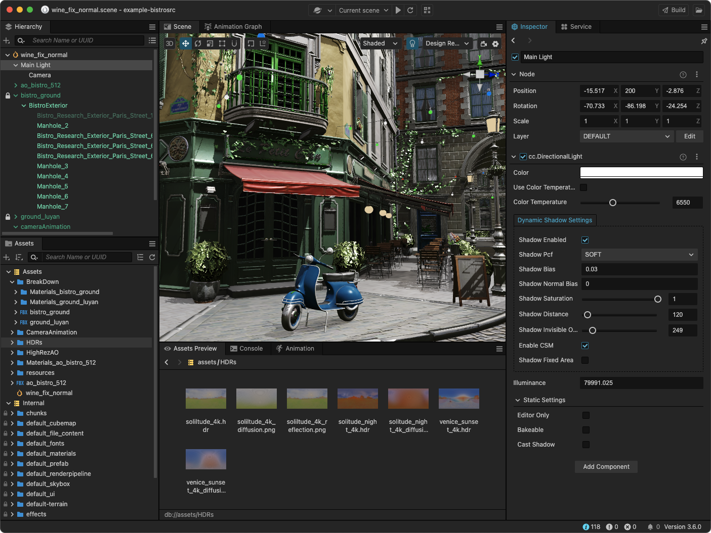

Cocos Creator
Efficient, lightweight, and cross-platform. Cocos Creator is more than a graphics engine – it’s a real-time 3D content platform for games, XR, automotive, and education.

Project Details / Background
Cocos Creator is a next-gen engine for both 2D and 3D development, offering integrated workflows and cross-platform deployment. It’s widely used in games, XR, and metaverse solutions. More information is available on GitHub.
My Role:
- Led native engine development and later the entire Cocos Creator engine team.
- Defined roadmap, designed engine architecture, and optimized performance across platforms.
- Integrated rendering systems and improved cross-platform native runtime.
- Collaborated with product and tool teams to ensure smooth editor and runtime interaction.
Technologies: C++, TypeScript, OpenGL, Metal, Objective-C, JavaScript
Image Gallery
 Cocos Creator Editor Interface
Cocos Creator Editor Interface
 Rendering features in action
Rendering features in action